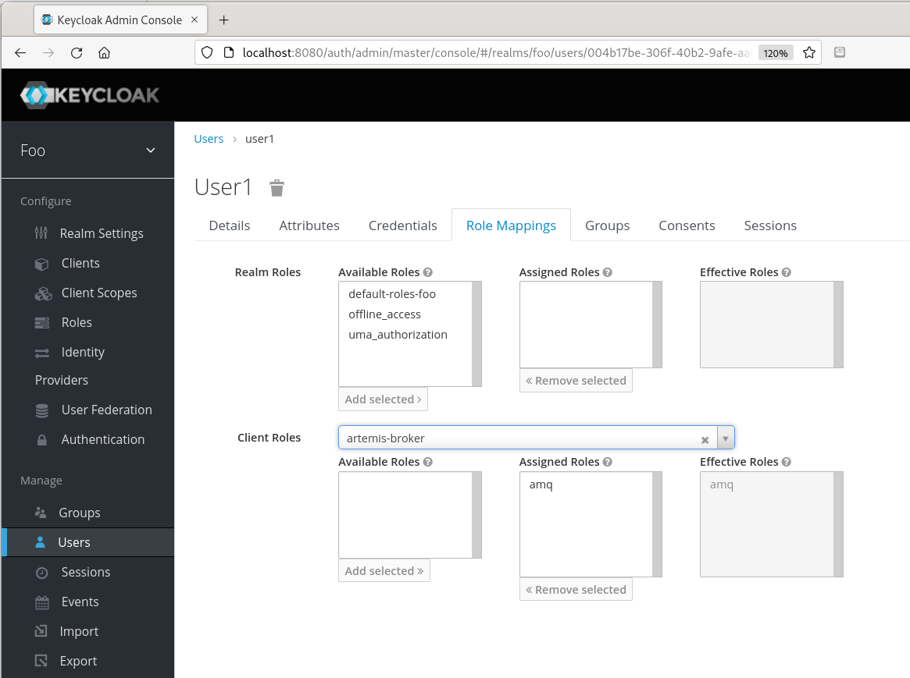

Using Keycloak for authentication with Apache Artemis: part 1
 This article describes what I believe is a minimal set-up of the Artemis
message broker, to use the Keycloak authentication server for access
control. The article covers the authentication of both messaging (JMS) clients
and users of the broker's administration console -- in fact, in this
trivial example, they are the same users.
This article describes what I believe is a minimal set-up of the Artemis
message broker, to use the Keycloak authentication server for access
control. The article covers the authentication of both messaging (JMS) clients
and users of the broker's administration console -- in fact, in this
trivial example, they are the same users.
Note:
I wrote this article for Keycloak 18.0, which was based on the Wildfly application server. Newer versions are based on Quarkus but, perhaps surprisingly, basic administration is similar. However, when I tested this article on Keycloak 24.0, I found that I had to do a few things differently. It's plausible that the steps I found I needed, I actually needed for 18.0, but forgot to document. If so, I apologise. Please see the end of this article for what's different in 24.0
I will describe the set-up of Keycloak and Artemis from scratch, on bare metal. This example uses 'direct access grants' for authenticating JMS clients. This means that the JMS client will present a user ID and password to the Artemis broker, and Artemis will authenticate these credentials against Keycloak. In the next article I describe an authentication scheme in which a JMS client gets a short-lived 'bearer' token from Keycloak, and passes that to Artemis. This is a more modern way of doing authentication, although the need to fetch a token makes it less common in machine-to-machine interactions.
Limitations
This minimal set-up is only intended to serve as a starting point, and has a number of important limitations.
Keycloak and Artemis are on the same, local host (but this is easy to change)
No SSL/TLS is used anywhere -- all communication is plaintext
The same users and roles are defined for both messaging clients, and users of the web-based administration console
I'm not going to attempt to describe any of the authentication protocols, or even give low-level details of the set-up: to be frank, I lack the expertise to do so
Installing and setting up Keycloak
1. Obtain the Keycloak bundle. I'm using version 18.0 -- the "legacy" version that is based on Wildfly. Newer versions will be based on Quarkus, but they should work in a very similar way -- at least in simple applications.
2. Unpack the bundle and start the server by running
bin/standalone.sh or bin\standalone.bat.
3. Open the Keycloak administration console using a web browser -- it uses port 8080 by default.
4. Enter an initial administrator password when prompted.
5. From the realm name drop-down list at the top left, select "Add realm". Call the new realm "foo", or choose a more imaginative name -- but note that the name will appear in later configuration, and I have assumed "foo" in what follows.
6. From the left-hand side-bar menu select "Clients", and add client "artemis-broker". This name will be used in other parts of the Keycloak configuration, and also by messaging clients when they authenticate. If not changed, the authentication protocol for this client will be OpenID Connect (an extension of OAuth 2.0).
Note:
The term "Client" in Keycloak denotes one or more applications with related authentication requirements; Keycloak itself is not acting as a client in a client/server interaction.
7. In the configuration page for the "artemis-broker" client, select the "Roles" tab, and add an "amq" role. No specific configuration is needed for the role, nor any other configuration for the client. "amq" is the name used in Artemis, by default, for a "superuser" role -- a user that has access to all message queues and to the administration console. Of course, in practice, we would be creating multiple roles with different users.
8. Select "Users" from the left-hand side-bar menu, and create a new user. I'm using "user1". In the "Credentials" tab for the new user, fill in the password (and configuration) and click "Reset Password".
9. In the "Role Mappings" tab for the user, do not select any realm roles. Instead, select "artemis-broker" under "Client Roles" and add the client role "amq" (it should be the only available selection).
The new user should look like this, in the Keycloak console:

This completes the Keycloak set-up. We have created an authentication role with one "client", one client role "amq", and one user "user1" in that role. The authentication URL, that clients will use, will be http://host:8080/auth", where "host" might be "localhost" in a simple test, and that's what I will assume here. You'll need this URL when setting up the authentication provider in Artemis.
Installing and setting up Artemis
1. Obtain Apache Artemis I'm testing using the May 5 build; the Red Hat productised version, AMQ 7.9, also works fine.
2. Unpack the distribution, and create a new broker instance by
running bin/artemis create foo. Again, choose a
more imaginative name than "foo" if you prefer. Answer the questions
about administrator IDs, but bear in mind that the answers will not
be used, as we will be overwriting the log-in configuration files.
Don't make any changes to etc/broker.xml -- the stock
configuration creates one user role "amq" with all access to everything.
That is sufficient for basic testing.
3. Create the file etc/keycloak.json, which will be used
by the Keycloak log-in module in Artemis.
{
"realm": "foo",
"resource": "artemis-broker",
"auth-server-url": "http://localhost:8080/auth",
"use-resource-role-mappings": true,
"principal-attribute": "preferred_username",
"ssl-required": "external",
"credentials": {
"secret": "foo"
}
}
In this configuration, "resource" denotes the Keycloak "client" we created earlier. The "secret" value is arbitrary -- it will be used in the OAuth challenge, but is not actually check with the current configuration. See below for more on this subject.
4. Edit etc/login.config in the broker instance directory, so that it looks like this:
activemq {
org.keycloak.adapters.jaas.DirectAccessGrantsLoginModule required
keycloak-config-file="${artemis.instance}/etc/keycloak.json"
role-principal-class=org.apache.activemq.artemis.spi.core.security.jaas.RolePrincipal
;
org.apache.activemq.artemis.spi.core.security.jaas.PrincipalConversionLoginModule required
principalClassList=org.keycloak.KeycloakPrincipal
;
};
Note that this file references the keycloak.json created
earlier. The JAAS realm name "activemq" is a predefined, default name.
Artemis can use different JAAS realms for different subsystems, and it
will usually be appropriate
to do so -- see below. In this trivial example, however, all authentication
will use the same settings.
5. Start the Artemis broker (bin/artemis run). Look for a
message in the log similar to the following:
2022-05-24 14:11:07,937 INFO [io.hawt.web.auth.AuthenticationConfiguration] Starting hawtio authentication filter, JAAS realm: "activemq" authorized role(s): "amq" role principal classes: "org.apache.activemq.artemis.spi.core.security.jaas.RolePrincipal"
6. Verify that you can log into the Artemis web console
(localhost:8161/console) using the credentials user1/user1,
and no others.
7. To test that messaging clients are being authenticated correctly,
you can use the built-in artemis utility. For example:
$ ./bin/artemis producer --user user1 --password user1 Connection brokerURL = tcp://localhost:61616 Producer ActiveMQQueue[TEST], thread=0 Started to calculate elapsed time ... ... Producer ActiveMQQueue[TEST], thread=0 Elapsed time in milli second : 7022 milli seconds
Extending the configuration
Configuring which users can do what on which message queues is not specifically
a Keycloak issue -- all that Keycloak does is supply the user roles;
Artemis will use its own configuration (in broker.xml) to
decide whether an operation is allowed.
In this trivial example, I've used a single user to test both messaging
clients and administration -- this is unlikely to be a satisfactory
arrangement in practice. Artemis does not really have fine-grained control
of the console: if a user can access the console, that user can do
everything that the console allows. To grant access to the console only
to specific users, create a new "console" role (again, this is a "client"
role) in Keycloak, and assign that role to the relevant users. Then, to
configure Artemis to allow only that role to access to console, edit
etc/artemis.profile and change HAWTIO_ROLE=amq
to HAWTIO_ROLE=console.
If you want to use a completely different authentication configuration
for the console -- not just a different role -- then you can create a
new JAAS realm in login.config. Set the Java system
property hawtio.realm to indicate the new realm.
This realm can reference completely different Keycloak configuration
files, if necessary.
Closing remarks
It's not difficult to configure Artemis to use Keycloak for authentication -- so long as the requirements are very simple. In this article, I've presented what I believe to be the simplest possible, working configuration.
What I've described in this article is a "direct access" authentication scheme. By that I mean that the client has no authentication user interface, and just provides credentials that Keycloak checks. A client that has a web interface will more usually redirect users to the Keycloak log-in screen, and complete authentication that way, before being directed back to the application. This requires a somewhat more complicated set-up.
"Direct access" clients typically have an additional layer of authentication, being asked to provide a "secret" value known to Keycloak, as well as its regular credentials. A Keyclock client has an "Access Type" setting that defaults to "public", meaning that no secret value is required. Thus we were able to set the secret to "foo" in the AMQ configuration.
To assign a secret to a specific Keyclock client, set the Access Type to "confidential", and then go to the "Credentials" page of the client. There you will be able to see, or edit, the secret value, which can then be copied to the AMQ configuration.
Later versions of Artemis contain an example,examples/features/standard/security-keycloak/,
that demonstrates a more complex set-up, in which messaging clients and
console administrators have completely different Keycloak configurations.
Addendum -- what I had to do differently in Keycloak 24.0
1. A few of the user interface elements are in slightly different places in the web console in 24.0. I hope these differences are slight, but it might be necessary to hunt around in the UI a little, to find the settings I mention.
2. In 18.0, I configured AMQ to use the authentication URL
/auth. This doesn't work in 24.0, and you'll see
this error message in AMQ:
WARN [org.keycloak.adapters.jaas.DirectAccessGrantsLoginModule] Login failed. Invalid status: 404, OAuth2 error. Error: Unable to find matching target resource method, Error description: For more on this error consult the server log at the debug level.
That's a genuine 404 error, because the URL /auth doesn't
go anywhere. I found that I didn't need a path in the URL at all with
24.0, so in keycloak.json I have:
"auth-server-url": "http://localhost:8080/",
What happens is that the keycloak adapter makes a request on
/realms/foo/.well-known/openid-configuration to find the
OAuth endpoints, so we don't need to set one explicitly.
3. With 24.0 I found that I couldn't use a minimal user, with nothing but a username and password. When I set this up, I got the following error message in AMQ:
WARN [org.keycloak.adapters.jaas.DirectAccessGrantsLoginModule] Login failed. Invalid status: 400, OAuth2 error. Error: invalid_grant, Error description: Account is not fully set up
I think the user needs at least a verified email address, or we need to disable email verification completely. Since a direct grant user has no user interface, we can't expect the user to verify the email address. In the settings page for the user, there is a checkbox for "Email verified". However, that doesn't work on its own -- the user actually needs an email address, even if it's a bogus one.
Alternatively, select the 'Authentication' menu for the realm (leftmost pane in the UI), Select the 'Required actions' tab, and turn off 'Verify Email'. Of course, this method affects all users.